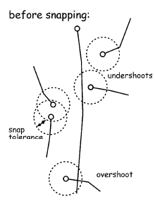

Vector Data Models
Specifically, this section will cover vector models and their relation to topology.
Recall a vector model is a model made with points, lines, and polygons, representing entities and features. There can also be associated attributes, which are the non-spatial components of a model.
Vector models can commonly be represented as:
- non-topological vector models
- topological vector models
Non-Topological Vector Data Model
- Advantages
- simple (often open file standards)
- efficient for display and plotting
- Disadvantages
- can contain duplicate common boundaries (increases costs due storage and analysis)
- can be inefficient for spatial analysis
- editing and querying can be difficult
Can be referred to as spaghetti models.
Topological Vector Data Model
Topology: geometric properties that do not chance with changes shapes, specifically the following properties:
- adjacency
- connectivity
- containment
A topologically defined model can have its shape changed (or warped) and still retain its properties.
- Advantages
- data storage reduced (boundary arcs stored once)
- explicit neighbor relations maintained
- useful for cleaning, digitizing, analysis, and queries
- Disadvantages
- computational overhead
- draws slower
Topological versus Non-Topological Editing
Snapping
Given a snap tolerance, points and lines can be combined into shared boundaries. Essentially, points are automatically set to have the same coordinates. They become magnetic. Position errors can stem during build processes, especially when digitizing.

Snap tolerance must be chosen carefully:
- undershooting: node does not quite reach other node or line
- overshooting: lines cross over existing nodes or lines
- rule of thumb: should be smaller than the desired positional accuracy
Advanced Data Model with Applied Topology
- Network Models
- routes
- hydrology (i.e. river networks with help in flooding scenarios)
- other models with attributes that can affect a cost
- can get very complex
- given a topologically regulated network, can change shape without changing properties, must follow:
- adjacency
- connectivity
- containment
- Triangular Irregular Networks (TINs)
- create a network over a landscape with triangles to represent terrain elevation via a topological network
- points (nodes) can be actual measured references
- edges are formed between the nodes
- the triangular faces are known as facets
- adhere to the topological properties:
- adjacency
- connectivity
- containment
Topology Rules (ArcGIS Specific)
Vector Operations
Vector operations are used in spatial data analysis on vector data models. Vector operations can be applied with functions and can have one-to-one or many-to-one type inputs and outputs.
Common Vector Operations
- Measurements
- length (lines): commonly measured via Euclidean distance formula
- area (polygons): commonly measured by dividing polygons into triangles, which have easily calculable area, and summing over positive and negative results
- Selection
- Query features (by layer) based on attributes
- Query features (by layer) based on spatial criteria such as topology rules (adjacency, connectivity, containment, etc.)
- Querying features by multiple layers:
- Set algebra: \(<, >, =, <>\)
- Boolean algebra:
- disjunction (OR)
- conjunction (AND)
- complement/negation (NOT)
- Classification and Re-classification
- categorize geographic objects based on a set of conditions
- i.e. re-classification could be forest into
- deciduous forest
- evergreen forest
- mixed forest
- re-classification based on binary logical results (i.e. “West of the Mississippi”)
- Classification Schemes
- equal-interval
- natural breaks
- equal-area
- Dissolve
- combine like features based on attributes
- i.e. combine smaller polygons into larger polygons based on criteria
- can be used after reclassification (i.e. states west and east of the Mississippi dissolves into two total polygons)
- don’t forget about MAUP when performing dissolves
- Buffer
- simple buffer: point layer \(\rightarrow\) overlap dissolved
- compound buffer: point layer \(\rightarrow\) overlap identified
- nested buffer (doughnut buffer): nested rings within a simple buffer
- variable buffer: buffer changes with relation to attribute (i.e. distance from main branch of river)

- Overlay
- point in polygon
- line in polygon
- polygon
- intersection
- union
- clip
- erase
- identity
- spatial analysis within overlay
- using a common coordinate system, different layers with spatial and attribute data can be combined into a new layer
- vector overlay (point, line, polygon):
- intersecting liens are split and a node placed at the intersection point
- topology is likely to be different
- must be recreated for later processing
- output typically takes the lowest dimension of the inputs
- can use overlays to combine attributes of layers and create new tables
Overlay: Point in Polygon
Line in Polygon

Polygon on Polygon (Boolean Algebra / Clip / Erase)
Polygon Overlay: Intersection
Polygon Overlay: Union
Can be shown similarly to the above with attributes, intermediate, and final output.
Polygon Overlay: Clip
- Clip feature must be polygons, input can be points, lines or polygons
- Input attributes retained; clip feature attributes ignored
- Essentially acts as a crop function
Polygon Overlay: Erase
- Erase and input features of same type
- Input attributes retained; erase feature attributes ignored
- Essentially acts as an inverse crop function, removing a portion of the map
Polygon Overlay: Identity
- computes a geometric intersection of the input features and identity features
- essentially extends attribute features
- the input features or portions thereof that overlap identity features will get the attributes of those identity features
Importance of Topology in Overlay
Slivers or Sliver Polygons can occur when polygons with a shared/common boundary overlap or don’t match entirely. Topological Data Sets can help fix or prevent this by preventing duplicate shared boundaries or nodes. This can also be fixed via snapping and other ArcGIS tools.
Selection by Adjacency
When selecting by adjacency, there are different criteria:
- shared line requirement
- share node OR line requirement
- among other spatial criteria that could define adjacency